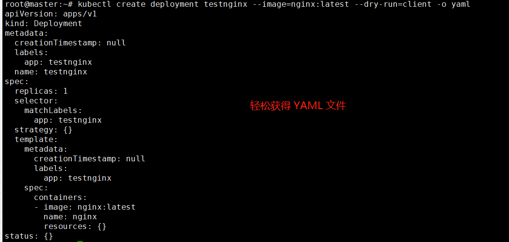

3.2 Deployment部署
Deployment 是 Kubernetes 提供的一种自我修复机制来解决机器故障维护的问题。前面提到了单独部署 Pod，但是这种方式只适合临时的 Pod，用于测试调试。如果要用于生产，则需要 Deployment 等控制器管理部署 Pod，维护 Pod 的副本数量以及 Pod 监控和维护。
对于 Kubernetes 对象的部署，例如 Pod、Deployment、Service 等，有三种部署方式：
- Using Generators (Run, Expose)
- Using Imperative way (Create)
- Using Declarative way (Apply)
在 2.1 章中，我们已经学习了 Run 和 apply 等，在本篇以及后面的章节中，我们会一步步深入学习这些部署方式。
本篇包含或需要掌握以下内容：
- 创建 Deployment
- 修改 Deployment
- 查看 Deployment 、Pod、Services、副本
在本篇文章中，我们将部署一个 Nginx 实例，并学会 部署以及管理 Deployment、Pod。
Deployment
当我们单独使用 docker 部署应用时，为了应用挂了后能够重启，我们可以使用 --restart=always 参数，例如：
docker run -itd --restart=always -p 666:80 nginx:latest
但是这种方式只能单纯重启容器，并不具备从机器故障中恢复的能力，即当一台服务器挂了后，此服务器上所有的容器全部挂掉。
Kubernetes Deployment 是一种 Pod 管理方式，它可以指挥 Kubernetes 如何创建和更新你部署的应用实例，创建 Deployment 后，Kubernetes master 会将应用程序调度到集群中的各个节点上。Kubernetes Deployment 提供了一种与众不同的应用程序管理方法。
Deployment 的创建，有两种方法，一种是直接使用命令创建(kubectl create)，一种是通过 YAML(kubectl apply)，后面我们会介绍这两种创建方法。
创建 Deployment
在 Kubernetes 中，Pod 是调度的最小单位，一个 Pod 中包含多个 容器，所以我们的各种操作都是在 Pod 之上。
我们来使用 deployment 部署一个 Pod，这个 Pod 包含一个 Nginx 容器。
kubectl create deployment nginx --image=nginx:latest
格式：
kubectl create deployment {deployment对象名称} --images={镜像名称和标签}
此时，nginx 容器会以 Pod 的方式部署到节点中，但是被部署到哪个节点是随机的，如果你只有一个 worker 节点，则 Pod 必定在这个 Worker 节点上。当然，我们可以获取到具体的调度信息，从中查看 Pod 被调度到哪个节点。
root@instance-1:~# kubectl get deployments -o wide
NAME READY UP-TO-DATE AVAILABLE AGE CONTAINERS IMAGES SELECTOR
nginx 1/1 1 1 52s nginx nginx:latest app=nginx
root@instance-1:~# kubectl get pods -o wide
NAME READY STATUS RESTARTS AGE IP NODE NOMINATED NODE READINESS GATES
nginx-55649fd747-s4824 1/1 Running 0 61s 192.168.56.4 instance-2 <none> <none>
可以看到， Pod 在 instance-2 中运行着。
Deployment 会为我们自动创建 Pod，Pod 由 {deployment名称}-{随机名称} 组成。
[Info] 提示
还有一个地方也说一下，
kubectl get xxx时，带不带s都没关系，例如kubectl get nodes/kubectl get node都是一样的。不过，一般从语义上，我们获取全部对象时，可以使用
kubectl get nodes，获取具体的对象时，可以使用kubectl get node nginx。类似的，kubectl describe nodes、kubectl describe node nginx。实际上加不加s都一样。
kubectl apply/create
当我们创建一个 deployment 时，kubectl create 和 kubectl apply 效果是一样的，但是 apply 还具有更新(update) 的功能。
kubectl apply 会在以前的配置、提供的输入和资源的当前配置之间 找出三方差异，以确定如何修改资源，kubectl apply 命令将会把推送的版本与以前的版本进行比较，并应用你所做的更改， 但是不会自动覆盖任何你没有指定更改的属性
另外还有 kubectl replace 、kubectl edit。kubectl replace 是破坏性更新/替换，容易导致问题；kubectl edit 可以更新 Deployment 等已存在的对象。
根据 Kubernetes 官方的文档说明，应始终使用 kubectl apply 或 kubectl create --save-config 创建资源。
前面已经学习了 kubectl create，这里学习一下 kubectl apply。
通过 YAML 文件部署 nginx：
kubectl apply -f https://k8s.io/examples/controllers/nginx-deployment.yaml
很多开源软件提供了 YAML 文件，我们通过 YAML 文件可以快速部署服务，如 Redis、Consul 等。
这里再说一下创建 Deployment 的区别。
如果使用 create 创建，命令格式：
kubectl create deployment {deployment的名字} --image={镜像名称}
如果使用 apply 命令创建，YAML 中需要指定一些信息，可定制性很高。
kind: Deployment
... ...
medatada:
name:nginx
... ...
spec:
containers:
- image: nginx:latest
然后执行 kubectl apply -f xxx.yaml 文件。
一个是 kubectl create deployment ；另一个是 kubectl apply -f，在 yaml 中指定 kind: Deployment。
如果我们只需要快速创建，使用命令形式就行；如何生产生产，还是得使用 YAML 文件，并于留存记录。
要删除一个对象，可以使用 kubectl delete -f {名称}.yaml，如删除 calico。
kubectl delete -f calico.yaml
检查 YAML
有时我们不知道我们的创建命令或 yaml 是否正确，可以使用 --dry-run=client ，--dry-run=client 参数来表示当前内容只是预览而不真正提交。
kubectl create deployment testnginx --image=nginx:latest --dry-run=client
在一些 k8s 认证中，我们没时间一点点写 yaml ，但是又需要定制，此时可以使用 --dry-run=client -o yaml ，既可以不生效 Deployment，又可以导出 yaml 文件。
[Info] 提示
-o wide可以查看对象更多的字段信息；kubectl describe可以查看对象的全部详细信息；-o yaml或-o json可以查看对象的定义/描述文件。
--dry-run取值必须为none、server或client。如果客户端策略，只打印将要发送的对象，而不发送它。如果是服务器策略，提交服务器端请求而不持久化资源。
命令示例如下：
kubectl create deployment testnginx --image=nginx:latest --dry-run=client -o yaml
# -o json 可以输出 json 格式

使用这样的方法，可以快速获得需要的 YAML 模板，然后复制到 YAML 文件，根据需要改动、定制。除了 deployment，其它 kubernetes 对象也可以使用这种方法。
查看 Deployment
我们以 Deployment 的方式部署 Pod ，就会创建一个 Deployment 对象，获得 deployment 列表：
kubectl get deployments
kubectl get deployments -o wide
NAME READY UP-TO-DATE AVAILABLE AGE
nginx 1/1 1 1 2m24s
NAME READY UP-TO-DATE AVAILABLE AGE CONTAINERS IMAGES SELECTOR
nginx 1/1 1 1 2m42s nginx nginx:latest app=nginx
在
kubectl get ...后面加上-o wide可以获得更多的标签信息。
使用 kubectl get events 可以获得集群中最近发生的事件，如创建 Deployment 到部署容器过程的详细事件记录。
Successfully assigned default/nginx-55649fd747-wdrjj to instance-2
Pulling image "nginx:latest"
Successfully pulled image "nginx:latest" in 8.917597859s
Created container nginx
Started container nginx
Created pod: nginx-55649fd747-wdrjj
Scaled up replica set nginx-55649fd747 to 1
使用 kubectl describe deployment nginx 可以获得更加详细的信息，是各种信息的集合。

查看 Pod
我们没有直接创建 Pod，而是通过 Deployment 创建，接下来我们需要了解如何查看 Pod 。
kubectl get pods
NAME READY STATUS RESTARTS AGE
nginx-55649fd747-msw8g 1/1 Running 0 4h16m
可以看到一个 Pod 名为 nginx- ，因为我们是利用 Deployment 部署 Pod 的，没有指定这个 Pod 的名称，所以默认 Pod 名称以 Deployment 名称为前缀。
我们查看这个 pods 被部署到了哪个节点上：
kubectl get pods -o wide
NAME READY STATUS RESTARTS AGE IP NODE
nginx-55649fd747-msw8g 1/1 Running 0 4h19m 192.168.56.57 instance-2
可以看到，这个 Pod 在 instances-2 这个节点上，同时这个 Pod 也有一个 IP，Kubernetes 会为每个 Pod 分配一个唯一的 IP，这个 IP 可以在节点上访问，其它 Pod 也可以通过 IP 访问此 Pod。
由于这个 Pod 里面的容器是 Nginx(80端口)，所以我们可以访问这个 IP 可以打开 Nginx 页面。
root@instance-1:~# curl 192.168.56.57
<!DOCTYPE html>
<html>
<head>
<title>Welcome to nginx!</title>
<style>
body {
... ...
对于没有指定的 Deployment、Pod、Service 等对象，会默认分配到 default 命名空间中，我们在执行kubectl get {} 时，会获取 default 命名空间中的对象， 后面加上 --all-namespaces 可以获得所有命名空间中的对象，使用 --namespace= 可以指定获取某个命名空间中的对象。
kubectl get pods --all-namespaces
# kubectl get pods --namespace=default
NAMESPACE NAME READY STATUS RESTARTS AGE
default nginx-55649fd747-msw8g 1/1 Running 0 4h28m
kube-system etcd-instance-1 1/1 Running 1 13d
kube-system kube-apiserver-instance-1 1/1 Running 1 13d
kube-system kube-controller-manager-instance-1 1/1 Running 1 13d
kube-system kube-proxy-bhj76 1/1 Running 1 13d
kube-system kube-proxy-pm597 1/1 Running 0 13d
kube-system kube-scheduler-instance-1 1/1 Running 1 13d
kubernetes-dashboard dashboard-metrics-scraper-856586f554-4nd9v 1/1 Running 1 13d
kubernetes-dashboard kubernetes-dashboard-78c79f97b4-288js 1/1 Running 1 13d
在 worker 节点上执行 docker ps，可以看到 Nginx 容器：
root@instance-2:~# docker ps
CONTAINER ID IMAGE COMMAND CREATED STATUS PORTS NAMES
fe7433f906a0 nginx "/docker-entrypoint.…" 7 seconds ago Up 6 seconds k8s_nginx_nginx-55649fd747-wdrjj_default_ea41dcc4-94fe-47f9-a804-5b5b1df703e9_0
实时修改
使用 kubectl edit 可以实时修改一个对象，这里我们使用前面已经部署好的 Nginx 这个 Deployment，因为创建的 Pod 名称有点长，我们希望直接改成 nginx。
修改 deployment：
kubectl edit pod nginx-55649fd747-msw8g
在 metadata 字段中，找到 name: nginx-55649fd747-msw8g ，修改为合适的名称。
修改完毕后，会提示：
A copy of your changes has been stored to "/tmp/kubectl-edit-w11bx.yaml"
error: At least one of apiVersion, kind and name was changed
出于某些原因，直接修改 name 字段是不行的，还需要修改其它地方。
这里读者了解，可以通过 kubectl edit 实时直接修改对象即可。后面还会介绍另一种修改方法。
导出 yaml
我们可以从已经创建的 Deployment 、Pod、Service 等对象导出 yaml 文件，使用 -o yaml 即可导出(-o json 导出json)。
kubectl get deployment nginx -o yaml
# 保存到文件
# kubectl get deployment nginx -o yaml > mynginx.yaml
然后终端会打印：
apiVersion: apps/v1
kind: Deployment
metadata:
annotations:
deployment.kubernetes.io/revision: "1"
creationTimestamp: "2021-04-21T00:37:13Z"
generation: 1
labels:
app: nginx
name: nginx
namespace: default
... ...
虽然我们创建对象时的命令很简单，但是生成的 YAML 很复杂。
我们可以尝试把 yaml 导出到 mynginx.yaml 文件中，然后我们删除这个 Deployment。
kubectl get deployment nginx -o yaml > mynginx.yaml
kubectl delete deployment nginx
然后利用导出的 mynginx.yaml 再创建一个 Deployment。
kubectl apply -f mynginx.yaml
多个 容器
一个 Pod 中，是可以包含多个容器的，我们可以使用命令或 YAML 形式创建包含多个容器的 Pod 服务。示例如下：
root@master:~# kubectl create deployment testnginx --image=nginx:latest --image=busybox:latest --dry-run=client -o yaml
apiVersion: apps/v1
kind: Deployment
metadata:
creationTimestamp: null
labels:
app: testnginx
name: testnginx
spec:
replicas: 1
selector:
matchLabels:
app: testnginx
strategy: {}
template:
metadata:
creationTimestamp: null
labels:
app: testnginx
spec:
containers:
- image: nginx:latest
name: nginx
resources: {}
- image: busybox:latest
name: busybox
resources: {}
status: {}
总结
本小章中不只是讲解 Deployment，还包含了很多日常管理对象的命令，读者可多做练习，加深记忆。